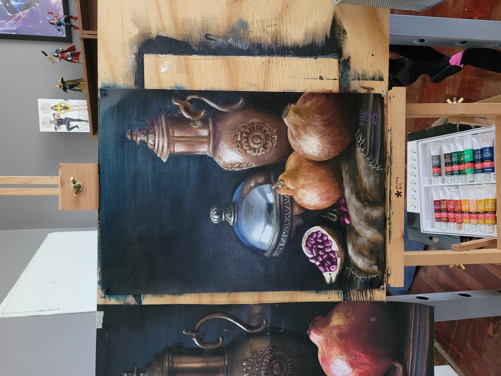
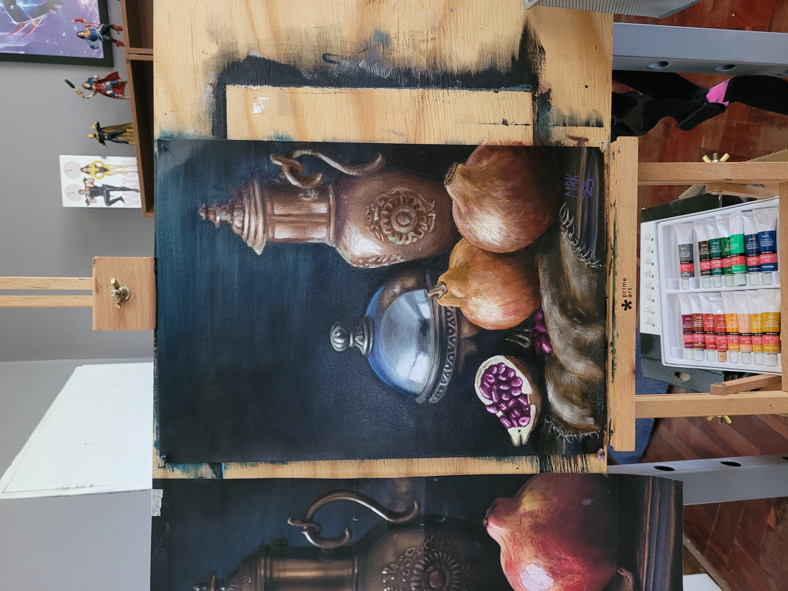

.jpg)


About Me
After graduating from university in 2015, I began my career as a Site Engineer with one of South Africa's Big 5 construction firms. In this onsite management role, I was responsible for translating consultant designs into reality, coordinating multidisciplinary teams, and ensuring quality standards were met across diverse project environments.
.jpg)
Each site introduced new workflows, documentation styles, and technologies—many of which were inconsistent, inefficient, or poorly suited to real-world conditions. These recurring frustrations resulted in me saying to my teams: “One day, I'm going to build an app that actually works for us onsite.” That idea stayed with me and thus the seeds were planted, however I could not find the time to learn how to code and make my own software solution.
After eight years in construction management, I took a step back to recalibrate. What followed was a period of deep reflection, experimentation, and growth. I explored art, design, agriculture, and trading—but I eventually returned to that original idea and began learning to code. Since then, I've immersed myself in programming fundamentals, frontend and backend development, UX/UI design, accessibility, and no-code tools. What started as curiosity has evolved into a clear career direction: software development with a focus on thoughtful, user-centered systems.
My current strengths lie in Frontend Design and Development, but I'm actively expanding toward full-stack capabilities and machine learning integration to better understand and assist the user experience. I bring with me a wealth of transferable experience—strategic planning, systems thinking, multi-disciplinary coordination, change management and constructability analysis. It's an ambitious goal, it's long term, It demands grit and growth…it's my goal. And this goal will enable me to finally make that app I wanted to make for so long.

.jpg)
.jpg) 
